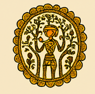

Saura painting is a traditional tribal art form from Odisha, known for its symbolic motifs, geometric patterns, and spiritual storytelling connected to nature and daily life.
1. Origins:
- Created by the Saura tribe in Odisha, primarily for religious and cultural purposes.
- Drawn on walls of houses during rituals, harvest, and festivals as a form of prayer to deities.
2. Medieval Period:
- Depicted ancestral spirits, natural elements, and tribal deities called "Idital."
- Used as sacred art to invoke blessings for health, prosperity, and protection.
3. Modern Era:
- Now painted on canvas, paper, and textiles for exhibitions and cultural preservation.
- Recognized as one of Odisha’s unique tribal art forms.
- Unlike other art forms, Saura painting is mostly anonymous and community-based.
- Tribal elders and local artisans pass it down generations rather than individual artists gaining fame.
1. Geometric shapes like triangles and circles dominate the art.
2. Depicts human figures, animals, trees, and daily activities.
3. Painted using natural colors made from clay, rice paste, and plant extracts.
4. Minimalistic style with intricate linework and repetitive patterns.
5. Spiritual themes focusing on rituals, deities, and village life.